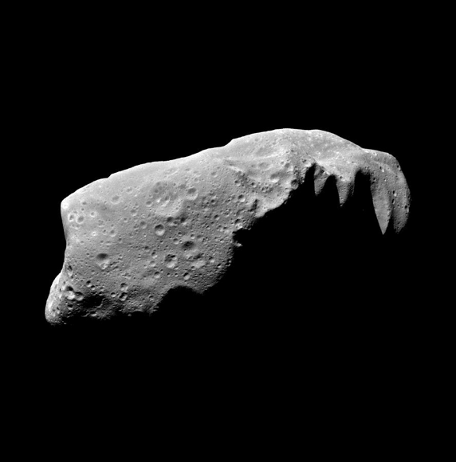

The International Astronomical Search Collaboration (IASC) is a citizen science program that provides high-quality astronomical data to citizen scientists around the world. These citizen scientists are able to make original astronomical discoveries and participate in hands-on astronomy. This service is provided at no cost!
Asteroid Search Campaigns are the primary focus of IASC. A "campaign" is a month-long event in which teams search for asteroids.
If you are new and would like more information on the asteroid search campaigns, please use the Register link.
Explore Asteroid
Asteroids are small, rocky objects that orbit the sun. Although asteroids orbit the sun like planets, they are much smaller than planets.

There are lots of asteroids in our solar system. Most of them live in the main asteroid belt—a region between the orbits of Mars and Jupiter.
Asteroids hang out in other places, too. For example, some asteroids are found in the orbital path of planets. This means that the asteroid and the planet follow the same path around the sun. Earth and a few other planets have asteroids like this.
Asteroids are left over from the formation of our solar system. Our solar system began about 4.6 billion years ago when a big cloud of gas and dust collapsed. When this happened, most of the material fell to the center of the cloud and formed the sun.
Some of the condensing dust in the cloud became planets. The objects in the asteroid belt never had the chance to be incorporated into planets. They are leftovers from that time long ago when planets formed.
No way! Because asteroids formed in different locations at different distances from the sun, no two asteroids are alike. Here are a few ways that they differ:
1. Asteroids aren’t all round like planets. They have jagged and irregular shapes.
2.>Some asteroids are hundreds of miles in diameter, but many more are as small as pebbles.
3. Most asteroids are made of different kinds of rocks, but some have clays or metals, such as nickel and iron.
The Asteroid Guide
Indian Asteroid Research Centre
The Carbon Asteroids
C-Types
The C-type Asteroids. It is also known as carbonaceous, or chondrite asteroids. The most common type, they account for about 75% of all known asteroids and predominantly occupy the outer portion of the asteroid belt.
The asteroid belt itself occupies the area between Mars and Jupiter that’s roughly 2 AUs to 3.5 AUs from the Sun, with one AU being the approximate distance between the Earth and the Sun. (Mars orbits at roughly 1.5 AUs while Jupiter lies at an average distance of 5.2 AUs)
The Stony Asteroids
S-Types
The S-type Asteroids. The second most common type, stony asteroids account for about 17% of all known asteroids. Most of the asteroids found in the inner asteroid belt – at a distance of about 2.2 AUs from the Sun – are S-types, but they can also be found in the middle of the belt, at around 3 AUs from the Sun.
Stony asteroids are primarily comprised of a metallic nickel-iron and magnesium silicate mixture and are brighter than their more common C-type cousins. Specifically, they reflect about 20% of the Sun’s light, with the brightest being visible in binoculars. The asteroid 7 Iris is the brightest of this type, and the second brightest asteroid overall.
(The brightest asteroid, 4 Vesta, is a V-type, one of the more unusual types that account for less than 10% of the total asteroid population.)
The Metallic Asteroids
M Types
The M-type Asteroids.. M-type asteroids are typically found around the middle of the asteroid belt. They account for most of the rest of the known asteroids, and while the composition of some M-types is unknown, they’re thought to be primarily comprised of nickel-iron. Some also contain small amounts of stone.
The largest of these, 16 Psyche, is one of the most massive asteroids in the solar system and is thought to be the iron core of a protoplanet.
The Psyche space probe, due to launch in August 2022, will encounter the asteroid in 2026 and spend nearly two years studying it.
Like S-types, these asteroids are relatively bright and reflect between 10%-18% of the sunlight they receive.